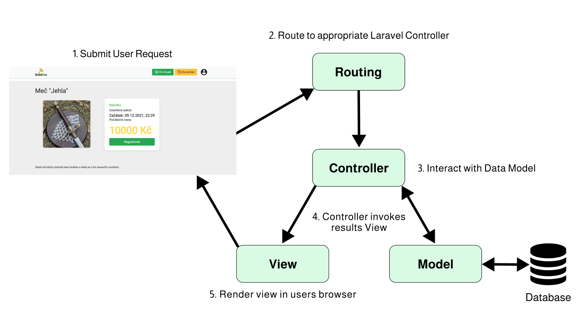

Aukce: prodej a nákup zboží a majetku prostřednictvím dražby
- Autoři
-
Gotzman Matěj
xgotzm00@stud.fit.vutbr.cz -
návrh vzhledu a obsahu formulářů, zajištění responzibility a stylování, implementace sychnronizace času a ceny mezi serverem a klientem.
-
Sokolovskii Vladislav
xsokol15@stud.fit.vutbr.cz -
návrh ER a UC diagramů, návrh a implementace databáze, počáteční nastavení pro práci s frameworkem,
propojení aplikace s AWS S3 bucketem pro persistentní uchovávání obrázků.
-
Strýček Šimon
xstryc06@stud.fit.vutbr.cz -
Registrační a přihlašovací formuláře, správa uživatelů, návrh loga a vzhledu IS, zajištění responzibility a stylování,
deployment na Heroku hosting, refactoring
-
Všichni - propojení databáze s business logikou přes ORM, technická zpráva, testování a případná oprava chyb.
- URL aplikace
- http://bidmore-iis.herokuapp.com/
Uživatelé systému pro testování
| Email | Heslo | Role |
|---|
| admin@bidmore.com | admin | Administrátor |
| liciator@bidmore.com | password | Liciátor |
| user@gmail.com | password | Uživatel |
IS implementuje všechny role a případy užití definované zadáním až na případné malé odchylky jako povolení registrace uživatele na aukci.
Funkce schvalování účasti uživatele na aukci byla záměrně vynechána z důvodu způsobu implementace aukčního systému. V našem případě totiž role liciátora zastáva spíše správu samostatných aukcí.
Jeho hlavní zodpovědností je v tomto případě pouze schvalování aukcí a potvrzování jejich výsledků. Možnost odebrání účastníka z aukce byla ovšem ponechána.
Původní diagram případů užití navržený před začatkem implementace je možné prohlednout zde.
V procesu implementace vznikly drobné odchylky od původního návrhu z důvodu přívětivějšího použití informačního systému.
Implementace
Pro implementaci webové aplikace jsme zvolili framework Laravel. Je zde implementován backend ale také generování html obsahu stránek dle daných okolností.
Využívá se zde MVC model.

Struktura projektu
- app/ - Obsahuje jádro naší aplikace a zahrnuje všechny různé komponenty od kontrolerů až po vlastní události
- Console/ obsahuje Kernel pro interakci s aplikací pomocí
artisan skriptu (100% laravel soubor)
- Exceptions/ obsahuje vyjímky (100% laravel soubor)
- Http/ - Obsahuje business logiku zpracovávající požadavky
- Controllers/ - Kontrolery, které jsou zprostředkovatelem mezi Views a Models (naše práce)
- Middleware/ - Middleware třídy (100% laravel soubor)
- Models/ - Modely, vytvořené na zakladě Laravel Eloquent ORM, odstíňují tabulky databází (naše práce)
- Providers/ - Obsahuje třídy, které se nám starají o registrování vlastních událostí nebo nastavení zpracovávání požadavků (100 % laravel soubor)
- bootstrap/ - Obsahuje zavádějící soubor frameworku a cache (100% laravel soubor)
- config/ - Obsahuje konfiguraci projektu
- database/ - Obsahuje databázové migrace a SQL skript pro vytvoření a inicializaci schématu databáze, migrace byly vygenerovany pomocí dáného open source nástroje
- doc/ - Obsahuje soubory pro vytvoření dané dokumentace a README
- public/ - Kořenový adresář celého webu. Také obsahuje soubor index.php, který zpracovává všechny požadavky na web
- css/ - CSS soubory pro sylování
- js/ - JavaScript soubory
- resources/ - Obsahuje nezkompilované zdrojové soubory pro front-end a překlady aplikace
- css/ - Nezkompilované CSS soubory
- js/ - Nezkompilované JavaScript soubory
- lang/cs/ - Obsahuje soubory s frázemi a jejich překlady do češtiny
- sass/- Nezkompilované SCSS soubory
- views/ - Pohledy
- routes/ - Routování našeho webu
- storage/ - Obsahuje souborové relace uživatelů, logy, možné skladiště pro námi vygenerované soubory a mezipaměť vygenerovaných Blade pohledů a dalších souborů.
- app/public/images – Použiváme pro cachování obrýzků, které byly stažene z AWS S3 bucket uložiště
- vendor/ - Knihovny spravované přes Composer
- .env – Credentials pro propojení aplikace s externímy službami jako databáze nebo email server
- composer.json – Soubor obsahující všechny závislosti projektu
Zajimavá řešení problemů, na které jsme narázili
Neperzistentní /storage uložiště na zvoleném hostingu
Během testování aplikace na Heroku hostingu jsme narazili na problem že Heroku pravidelně máže obrazky, které jsme
úkladali do složky /storage/app/public/images.
Bylo rozhodnuté napojít neperzistentní uložiště
na AWS S3 bucket, naštěstí implementace nebyla těžká jelikož Laravel má dobré rozhrání pro komunikaci s S3.
Databáze, ERD a schéma DB
Prvním krokem v návrhu infornačního systému pro dánou úlohu bylo vytvaření ER diagramu, na kterém by se pak stavěl
návrh databáze.
Původní ER diagram
Během implementace se původní návrh lehce pozměnil, ovšem všechny důležité prvky entit a samotná struktura zůstaly.

Server-side
Pro implementaci webové aplikace jsme zvolili framework Laravel. Je zde implementován backend ale také generování html obsahu stránek dle daných okolností.
Využívá se zde MVC model......
Client-side
Na straně klienta byla použita javascriptová knihovna jQuery. Provádí se zde validace zadaných dat ve formulářích, asynchronní komunikace se serverem a různé grafické animace.
Vzhled
Většina stylů byla implementovaná s pomocí frameworku Boostrap a doplněna vlastními styly v souboru general.css. Pro responzivní rozložení byl využit flexbox.
Nehodil se ovšem na responzivní zobrazení seznamů, kde byly implementované dvě verze zobrazení a to pro desktop a pro mobilní zařizení.
Pro přepínání mezi těmito zobrazeními bylo využito query @media. Při návrhu designu byla nejdříve zvolena základní barevná paleta a od ní se odvíjel návrh jednolivých zobrazení.
Ikony a font byly použity z knihovny Google Fonts. Snahou bylo vytvořit čisté a jednoduché grafické rozhraní podle principů Material Design.
Připady použití
- Neregistrovaný uživatel
- Registrace - RegisterController.php, register.blade.php, validace na straně klienta v souboru general.js
- Zobrazení úvodní stránky - HomeController.php, home.blade.php, animace posuvu seznamů v souborech general.js a general.css
- Zobrazení aukcí podle typu - AllAuctionsController.php, allAuctions.blade.php
- Zobrazení detailu aukce - AuctionController.php, detailed-auction.blade.php, synchronizace času a aktuální ceny pomocí AJAX v general.js
- Registrovaný uživatel
- Přihlášení - LoginController.php, login.blade.php, validace na straně klienta v souboru general.js
- Změna hesla?? Šimon pls doplň
- Vytvoření nové aukce - CreateAuctionFormController.php, create-auction.blade.php, validace na straně klienta v souboru general.js
- Zobrazení seznamu vytvořených aukcí - UserAuctionsController.php, userAuctions.blade.php
- Upravení aukce (před schválením) - UserAuctionsController.php, edit-auction.blade.php, validace na straně klienta v souboru general.js
- Registrace na aukci, přihazovat na aukci - AuctionController.php, detailed-auction.blade.php, synchronizace času a aktuální ceny pomocí AJAX v general.js. Obsluha tačítek "registrovat" a přihodit také pomocí AJAX v general.js. Validace v general.js
- Zobrazení registrovaných aukcí, zobrazení vítězných aukcí - UserAuctionsController.php, AllAuctions.blade.php
- Liciátor
- Zobrazení neschávelných aukcí, schválení aukce - AuctionApprovalController.php, auction-approval.blade.php
- Zobrazení schválených aukcí, účastníky aukce, možnost odebrat účastníka, schválení výsledku aukce - AuctionApprovalController.php, auction-approval.blade.php
- Administrátor
- Správa uživatelů - UserListController.php, userList.blade.php, validace na straně klienta v souboru general.js
Instalace
- Softwarové požadavky pro zprovoznění IS
- PHP, verze aspoň 7.3
- Composer
- Jakakoliv relační databáze, je možné použit předdefinovanou PostgreSQL, viz soubor .env (Projekt byl testován na databázích MySQL a PostreSQL.)
- AWS S3 bucket pro persistentní úkladaní obrázků, je možné použit předdefinovaný, viz soubor .env
- Postup instalace na server
- Naklonujte repozitař
git clone https://github.com/vsokolov00/iis-project (repozitář zveřejněn až po odevzdání)
- V kořenové složce projektu spusťte
composer install
- Upravte konfigurační soubor
.env pokud chcete použit jinou databázi nebo AWS bucket
- Pokud jste úspěšně připojili svou databázi, spusťte příkaz
php artisan migrate
- Vytvořte soft link pro přístup k obrazkům
php artisan storage:link
- Spusťte server příkazem
php artisan serve
Známé problémy
Veškerá funkcionalita specifikovaná v zadání je implementovaná.
Pro obnovu hesla je potřebá obratit se na administratora, reset hesla přes email není možný